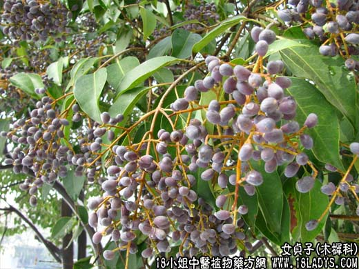

【中药概述】
女贞子为木犀科灌木或乔木植物女贞的成熟果实。甘、苦，凉。归肝、肾经。
1．补益肝肾：用于肝肾阴虚的目昏、目涩、视物减退、腰膝酸软、须发早白等，如（<证治准绳>二至丸）。
2．用于阴虚内热的发热或阴虚阳亢的眩晕耳鸣等症。
【药效鉴别】
旱莲草与女贞子均能滋补肝肾。但旱莲草善于凉血止血，故阴虚血热的出血证多用之；女贞子滋而不腻，能补益肝肾而明目，故肾阴虚之头晕、目昏、耳鸣等证多用。
女贞叶只用于清利咽喉，用于咽喉肿痛，无滋阴之功。
【药理作用】
1.对因化疗或放疗引起的白血球下降有升高作用；
2.煎剂对痢疾杆菌有抑制作用；
3.有强心利尿作用。
【化学成分】
含齐墩果酸和乙酰齐墩果酸、白桦酯醇、羽毛豆醇、甘露醇、油酸、亚麻仁酸，棕榈酸等。
【用量用法】
本品10——15g，水煎服。